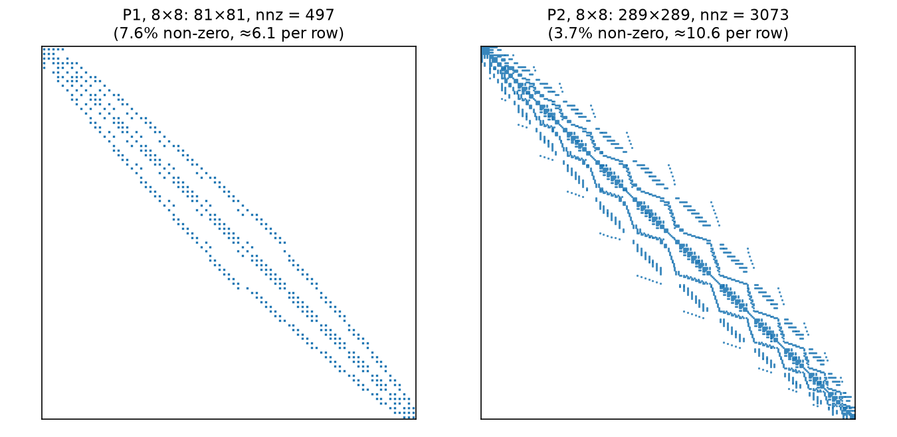
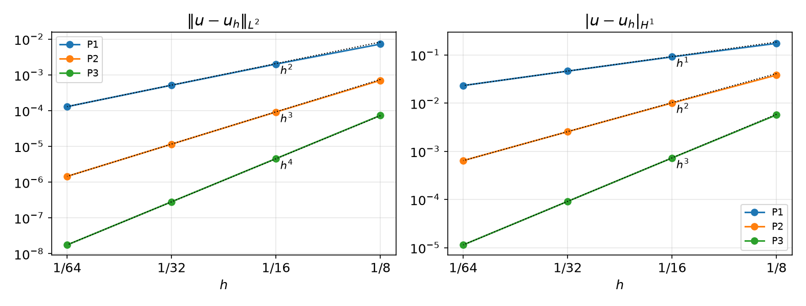

AI-based Materials and Process Simulation I
Week 05 — Hilbert Spaces · Riesz Representation · Lax–Milgram · Well-Posedness of Helmholtz/Poisson · Assembly, PETSc KSP and the Method of Manufactured Solutions
Process Systems Laboratory
Department of Chemical and Biomolecular Engineering, SeoulTech
Today
| Part | Topic | Time |
|---|---|---|
| Quiz | Week 4 material (closed-AI) | 10 min |
| A | Theory — Hilbert spaces, linear functionals, Riesz representation, Lax–Milgram, well-posedness of Helmholtz and Poisson | 70 min |
| B | From forms to matrices — assembly, PETSc Mat/Vec/KSP, direct and iterative solvers |
35 min |
| C | The method of manufactured solutions (MMS) — verifying a solver | 40 min |
| D | LLM pitfalls with linear solvers and MMS · assignment | 15 min |
Lab notebook: W05_lab.ipynb · Assignment: W05_HW5.ipynb (due before Week 6)
Week 4 in one slide
| Interpolant | \mathcal I_Kv=\sum_iN_i(v)\phi_i; preserves \mathcal P_k |
| Estimate | |u-\mathcal I_hu|_{H^i}\le Ch^{k+1-i}|u|_{H^{k+1}}, i=0,1 — rates 2/1, 3/2, 4/3 |
| Ingredients | Taylor remainder + polynomial preservation + scaling (shape regularity) |
| DOLFINx | interpolate, UFL error norms with allreduce |
So V_h can approximate u well. This week: does the discrete problem u_h\in V_h have a solution, is it unique, and does it stay bounded as h\to0?
- Answer for a whole class of problems at once: Lax–Milgram
- Then: how DOLFINx turns b(u,v)=F(v) into K\mathbf u=\mathbf F and solves it
- And how we verify that the code solves the right problem: MMS
Part A — Lax–Milgram
§A1 Hilbert spaces
Definition — Inner product, norm, Hilbert space
An inner product (\cdot,\cdot) on a vector space V is bilinear, symmetric and positive definite: (v,v)>0 for v\ne0. It induces the norm \|v\|=(v,v)^{1/2}. V is a Hilbert space if it is complete in this norm (Cauchy sequences converge in V).
| Space | Inner product | Complete? |
|---|---|---|
| L^2(\Omega) | (u,v)=\int_\Omega uv | yes |
| H^1(\Omega) | (u,v)_{H^1}=\int_\Omega uv+\nabla u\cdot\nabla v | yes |
| V_h (Pk) with (\cdot,\cdot)_{H^1} | same | yes — finite-dimensional |
| C^1([0,1]) with (\cdot,\cdot)_{H^1} | same | no — H^1-limits may have kinks |
Cauchy–Schwarz: |(u,v)|\le\|u\|\,\|v\|. On V_h=\operatorname{span}\{\phi_j\} the inner product is a matrix: (u_h,v_h)_{H^1}=\mathbf v^T G\,\mathbf u,\qquad G=M+K,\quad M_{ij}=\int\phi_j\phi_i,\ K_{ij}=\int\nabla\phi_j\cdot\nabla\phi_i . G is the Gram matrix of the basis — symmetric positive definite.
§A2 Linear functionals and the dual space
Definition — Bounded linear functional, dual norm
L:V\to\mathbb R linear is bounded if |L(v)|\le C\|v\| for all v. The bounded ones form the dual space V' with \|L\|_{V'}=\sup_{0\ne v\in V}\frac{|L(v)|}{\|v\|}. For linear functionals: bounded \iff continuous.
| L(v) on V=H^1(\Omega) | bounded? | why |
|---|---|---|
| \int_\Omega fv\,dx, f\in L^2 | yes, \|L\|\le\|f\|_{L^2} | Cauchy–Schwarz, \|v\|_{L^2}\le\|v\|_{H^1} |
| \int_{\Gamma}gv\,ds, g\in L^2(\Gamma) | yes | trace inequality (Week 6) |
| v(x_0) in 1D | yes | H^1\subset C^0 in 1D (Sobolev, Week 4) |
| v(x_0) in 2D | no | \log|\log r|\in H^1 is unbounded at 0 |
On V_h every linear functional is bounded (finite dimension). The question is whether the bound stays bounded as h\to0 — HW5 Q3.
§A3 Riesz representation
Every w\in V defines a functional L_w(v)=(w,v) with \|L_w\|_{V'}=\|w\| (Cauchy–Schwarz, equality at v=w). The converse:
Theorem — Riesz representation
For every L\in V' on a Hilbert space V there is a unique w\in V with (w,v)=L(v) for all v\in V, and \|w\|_V=\|L\|_{V'}.
On V_h it is a linear solve. With F_i=L(\phi_i): (w_h,\phi_i)_{H^1}=L(\phi_i)\ \ \forall i\iff G\,\mathbf w=\mathbf F,\qquad \|L\|_{V_h'}=\|w_h\|_{H^1}=\sqrt{\mathbf F^TG^{-1}\mathbf F}.
For L(v)=\int fv: G\mathbf w=\mathbf F is exactly the matrix of -\Delta w+w=f, \partial_nw=0 — the Riesz representer is the Helmholtz solution. f=xy on the unit square, P1: \|w_h\|_{H^1}=0.25798,\ 0.25806,\ 0.25808 (N=8,16,32) \le\|f\|_{L^2}=0.3333.
§A4 Linear variational problems
Definition — Linear variational problem
Given a Hilbert space V, a bilinear form b:V\times V\to\mathbb R and F\in V': find u\in V such that b(u,v)=F(v)\qquad\forall v\in V.
| Problem (unit square) | b(u,v) | F(v) | V |
|---|---|---|---|
| Helmholtz, \partial_nu=0 | \int\nabla u\cdot\nabla v+uv | \int fv | H^1 / Pk |
| Poisson, u=0 on \partial\Omega | \int\nabla u\cdot\nabla v | \int fv | H^1_0 / Pk with zero boundary DOFs |
| Poisson, \partial_nu=0 | \int\nabla u\cdot\nabla v | \int fv | \{v:\int v=0\} (Week 6) |
Galerkin: replace V by V_h\subset V. With u_h=\sum_ju_j\phi_j and v=\phi_i: \sum_j b(\phi_j,\phi_i)\,u_j=F(\phi_i)\iff K\mathbf u=\mathbf F,\qquad K_{ij}=b(\phi_j,\phi_i). Note the index order: row i = test function, column j = trial function.
§A5 Continuity and coercivity
Definition
b is continuous (bounded) on V if \;|b(u,v)|\le M\,\|u\|_V\|v\|_V for all u,v.
b is coercive on V if \;b(v,v)\ge\gamma\,\|v\|_V^2 for all v, with \gamma>0.
- Continuity: b does not blow up. Usually one line of Cauchy–Schwarz.
- Coercivity: b “sees” every direction of V — no v\ne0 with b(v,v)=0. This is where the boundary conditions enter.
On V_h: with b(v_h,v_h)=\mathbf v^TK\mathbf v and \|v_h\|^2=\mathbf v^TG\mathbf v, the best constant is a generalized eigenvalue \gamma_h=\min_{\mathbf v\ne0}\frac{\mathbf v^TK\mathbf v}{\mathbf v^TG\mathbf v}=\lambda_{\min}(K,G)\quad\text{(symmetric }K\text{)},\qquad \texttt{scipy.linalg.eigh(K, G)}.
§A6 The Lax–Milgram theorem
Theorem — Lax–Milgram
V Hilbert, b continuous (M) and coercive (\gamma), F\in V'. Then b(u,v)=F(v)\ \forall v\in V has a unique solution, and \|u\|_V\le\frac1\gamma\,\|F\|_{V'} .
Stability and uniqueness are one line each: take v=u, \gamma\|u\|^2\le b(u,u)=F(u)\le\|F\|_{V'}\|u\| . If u_1,u_2 both solve, b(u_1-u_2,v)=0, so the bound with F=0 gives u_1=u_2.
Existence, symmetric b: b is itself an inner product on V, and its norm is equivalent to \|\cdot\|_V (\gamma\|v\|^2\le b(v,v)\le M\|v\|^2), so (V,b) is a Hilbert space and F is bounded on it. Riesz in (V,b) gives u with b(u,v)=F(v). \square
§A6 Lax–Milgram — non-symmetric b
Riesz in (V,(\cdot,\cdot)) twice: b(w,\cdot)=(Aw,\cdot) defines A:V\to V, \|Aw\|\le M\|w\|; F=(f,\cdot). We need Au=f.
Fixed point of T(w)=w-\rho\,(Aw-f). For \delta=w_1-w_2: \|T w_1-T w_2\|^2=\|\delta\|^2-2\rho\,b(\delta,\delta)+\rho^2\|A\delta\|^2\le(1-2\rho\gamma+\rho^2M^2)\,\|\delta\|^2 . With \rho=\gamma/M^2 the factor is 1-\gamma^2/M^2<1: T is a contraction; V complete ⇒ unique fixed point (Banach). \square
Discrete version. V_h\subset V inherits M and \gamma, so K\mathbf u=\mathbf F is uniquely solvable and \|u_h\|_V\le\gamma^{-1}\|F\|_{V'} with the same constant for every h: the method is stable. (Coercivity ⇒ \mathbf v^TK\mathbf v>0 ⇒ K non-singular, even if K\ne K^T.)
A finite-dimensional system is uniquely solvable iff K is non-singular — Lax–Milgram adds the h-independent bound.
§A7 Helmholtz is well posed
-\Delta u+u=f in \Omega, \partial_nu=0 on \partial\Omega: \;b(u,v)=\int\nabla u\cdot\nabla v+uv=(u,v)_{H^1}, \;F(v)=\int fv.
| Check | Bound | Constant |
|---|---|---|
| F bounded | |F(v)|\le\|f\|_{L^2}\|v\|_{L^2}\le\|f\|_{L^2}\|v\|_{H^1} | \|F\|_{V'}\le\|f\|_{L^2} |
| b continuous | |b(u,v)|=|(u,v)_{H^1}|\le\|u\|_{H^1}\|v\|_{H^1} | M=1 |
| b coercive | b(v,v)=\|v\|_{H^1}^2 | \gamma=1 |
So \|u_h\|_{H^1}\le\|f\|_{L^2} for every mesh and degree. The Neumann condition is natural: it comes out of the integration by parts, no boundary condition is imposed on V_h.
Numerically, \gamma_h=\lambda_{\min}(K+M,\,G)=1.0000 for N=4,8,16 — trivially, since K+M=G.
§A8 Poisson: the seminorm problem
b(u,v)=\int\nabla u\cdot\nabla v gives b(v,v)=|v|_{H^1}^2 — a seminorm: |c|_{H^1}=0 for constants c.
| P1, \gamma_h=\lambda_{\min}(K,G) | N=4 | N=8 | N=16 | limit |
|---|---|---|---|---|
| Poisson, \partial_nu=0 | -2\times10^{-16} | 2\times10^{-15} | -2\times10^{-14} | 0 |
| Poisson, u=0 on \partial\Omega (boundary DOFs removed) | 0.9581 | 0.9535 | 0.9522 | \frac{2\pi^2}{1+2\pi^2}=0.9518 |
| -\Delta u-5u, \partial_nu=0 | -5 | -5 | -5 | not coercive |
- Neumann: K\mathbf 1=\mathbf 0 — not coercive; needs \int f=0 and \int u=0. Dirichlet: rules out constants, \|v\|_{L^2}\le C|v|_{H^1} (Week 6).
- Wrong sign: b(1,1)<0 — Lax–Milgram says nothing (the problem may still be solvable, not via this theorem).
§A9 Exercises
Exercise A.1 — Reaction coefficient
For b_\kappa(u,v)=\int\nabla u\cdot\nabla v+\kappa\,uv with \kappa>0 on H^1(\Omega): find M and \gamma. What happens to the stability bound as \kappa\to0?
Exercise A.2 — Not coercive
Show that b(u,v)=\int\nabla u\cdot\nabla v is not coercive on Pk with natural BCs. Which vector spans the kernel of K? Check it with K @ ones.
Exercise A.3 — Advection
On \hat V=\{v\in H^1(0,1):v(0)=v(1)=0\} let a(u,v)=\int_0^1u'v'+u'v+uv. Show a(v,v)=\|v\|_{H^1}^2. (Hint: \int_0^1v'v=\tfrac12[v^2]_0^1.)
Part B — From Forms to Matrices
§B1 Assembly — the cell loop
K_{ij}=b(\phi_j,\phi_i)=\sum_{c}\int_{K_c}\bigl(\nabla\phi_j\cdot\nabla\phi_i+\phi_j\phi_i\bigr): only cells where both \phi_i,\phi_j live contribute.
for each cell c:
Ke = element matrix on c # quadrature on K̂, pullback ∇φ = J^{-T} ∇̂φ̂, weights |det J| (Weeks 1–3)
dofs = cell_dofs(c) # the cell-node map M(c, ·) (Week 3)
K[dofs, dofs] += Ke # scatter-add into the sparse matrix
The sparsity pattern is fixed by the DOF map before any number is computed; the bandwidth depends on the DOF numbering.
§B2 Assembly in DOLFINx
u, v = ufl.TrialFunction(V), ufl.TestFunction(V)
a = fem.form(ufl.inner(ufl.grad(u), ufl.grad(v)) * ufl.dx + ufl.inner(u, v) * ufl.dx) # FFCx → C kernel
L = fem.form(ufl.inner(f, v) * ufl.dx)
A = fem.assemble_matrix(a) # dolfinx.la.MatrixCSR: A.to_dense(), A.to_scipy() (small, serial checks)
from dolfinx.fem.petsc import assemble_matrix, assemble_vector
A = assemble_matrix(a); A.assemble() # PETSc Mat (parallel)
b = assemble_vector(L) # PETSc Vec
b.ghostUpdate(addv=PETSc.InsertMode.ADD, mode=PETSc.ScatterMode.REVERSE) # add ghost contributions to ownersfem.assemble_* |
fem.petsc.assemble_* |
|
|---|---|---|
| returns | la.MatrixCSR, la.Vector, NumPy-friendly |
PETSc Mat, Vec |
| use for | inspecting small matrices, eigenvalues with SciPy | solving with KSP, any size, in parallel |
| after assembly | — | A.assemble(); vector: ghostUpdate(ADD, REVERSE) |
Why ghostUpdate: a cell on rank 1 that touches a DOF owned by rank 0 adds its contribution to rank 1’s ghost copy. REVERSE + ADD sends it to the owner. Forget it and the right-hand side is wrong only in parallel.
§B3 Solving: PETSc KSP
from petsc4py import PETSc
ksp = PETSc.KSP().create(msh.comm)
ksp.setOperators(A)
ksp.setType("cg"); ksp.getPC().setType("gamg"); ksp.setTolerances(rtol=1e-10)
uh = fem.Function(V)
ksp.solve(b, uh.x.petsc_vec)
uh.x.scatter_forward() # owners → ghosts
print(ksp.getIterationNumber(), ksp.getConvergedReason()) # reason > 0: converged§B4 Direct vs iterative
Helmholtz, P1, unit square, one process, rtol = 1e-10 — iterations:
| N | DOFs | LU | CG, no PC | CG + Jacobi | CG + GAMG | CG + hypre (BoomerAMG) |
|---|---|---|---|---|---|---|
| 32 | 1 089 | 1 | 145 | 102 | 15 | 6 |
| 64 | 4 225 | 1 | 275 | 198 | 17 | 7 |
| 128 | 16 641 | 1 | 533 | 392 | 18 | 7 |
| 256 | 66 049 | 1 | 994 | 553 | 20 | 7 |
- CG needs K symmetric positive definite — exactly what symmetric + coercive gives. Iterations \sim\sqrt{\kappa(K)} and \kappa(K)\sim h^{-2}: unpreconditioned CG doubles when h halves.
- Algebraic multigrid (GAMG, hypre): iterations almost independent of h — the method of choice for large elliptic problems.
- LU (
preonly+lu, or MUMPS): robust, the default for small 2D problems and for checking; memory grows fast in 3D.
Part C — The Method of Manufactured Solutions
§C1 Manufacture a solution
We cannot check u_h against the true solution of a real problem — we usually do not know it. So invent one:
MMS
- Choose a smooth \tilde u that satisfies the boundary conditions of the problem.
- Compute f=-\Delta\tilde u+\tilde u (symbolically — UFL does it for you).
- Solve with this f; then u=\tilde u exactly, and \|u-u_h\| must decrease at the theoretical rate.
| \tilde u on the unit square | \partial_n\tilde u=0? | usable for Helmholtz with natural BC |
|---|---|---|
| \cos(4\pi x)\,y^2(1-y)^2, \cos(\pi x)\cos(\pi y) | ✅ | ✅ |
| \sin(\pi x)\cos(\pi y) | ❌ at x=0,1 | ❌ — solves a different problem |
§C2 Rates
\tilde u=\cos(4\pi x)\,y^2(1-y)^2, Helmholtz with natural BC, LU:

| \|e\|_{L^2}, N=64 | rate | |e|_{H^1}, N=64 | rate | |
|---|---|---|---|---|
| P1 | 1.29\times10^{-4} | 1.99 | 2.31\times10^{-2} | 1.00 |
| P2 | 1.45\times10^{-6} | 3.00 | 6.39\times10^{-4} | 1.99 |
| P3 | 1.76\times10^{-8} | 4.00 | 1.14\times10^{-5} | 3.00 |
The interpolation rates of Week 4 — not by accident. Proof of the H^1 rate: Céa’s lemma (Week 7); L^2: Aubin–Nitsche (Week 7).
§C3 The FE solution is the best approximation
For symmetric coercive b, Galerkin orthogonality b(u-u_h,v_h)=0 makes u_h the b-orthogonal projection of u onto V_h. For Helmholtz b=(\cdot,\cdot)_{H^1}, so u_h is the closest point of V_h to u in \|\cdot\|_{H^1} — closer than \mathcal I_hu:
| full H^1 norm | N=8 | N=16 | N=32 |
|---|---|---|---|
| P1: \|u-u_h\| / \|u-\mathcal I_hu\| | 0.1731 / 0.1750 | 0.09084 / 0.09111 | 0.04599 / 0.04602 |
| P2: \|u-u_h\| / \|u-\mathcal I_hu\| | 0.03806 / 0.03906 | 0.01004 / 0.01012 | 0.002547 / 0.002554 |
Ratio <1 always, and \to1: the interpolant is almost optimal. The proof (three lines) and the version for a general symmetric b are in HW5.
§C4 What MMS catches
P2, L^2 error at N=8,16,32:
| Change to the correct code | \|e\|_{L^2} | rates | verdict |
|---|---|---|---|
| none | 7.0e-4, 9.1e-5, 1.2e-5 | 2.94, 2.98 | ✅ |
| \tilde u=\sin\pi x\cos\pi y (violates \partial_nu=0) | 0.430, 0.430, 0.430 | 0.00, 0.00 | wrong problem |
| sign error in f | 0.056, 0.056, 0.056 | 0.00, 0.00 | wrong problem |
| f=-\Delta\tilde u (forgot +\tilde u) | 7.8e-4, 2.1e-4, 1.7e-4 | 1.91, 0.29 | looks fine at N=8! |
quadrature_degree 2 |
7.2e-4, 9.1e-5, 1.2e-5 | 2.97, 2.99 | harmless here |
quadrature_degree 1 |
nan, nan, 3.07 |
— | singular matrix |
- One error value proves nothing (row 4 at N=8 ≈ correct). The rate over ≥ 3 meshes is the test.
- Stagnating error = consistent bug (wrong f, BC, form); dropping rate = bug hidden on coarse meshes. Low quadrature: harmless or fatal — MMS tells.
§C5 Math → DOLFINx
| Math | DOLFINx 0.11 |
|---|---|
| b(u,v), F(v) | a = inner(grad(u), grad(v))*dx + inner(u, v)*dx, L = inner(f, v)*dx |
| K_{ij}=b(\phi_j,\phi_i) | fem.petsc.assemble_matrix(fem.form(a)); A.assemble() |
| F_i=F(\phi_i) | assemble_vector(fem.form(L)) + ghostUpdate(ADD, REVERSE) |
| Gram matrix G, \gamma_h=\lambda_{\min}(K,G) | fem.assemble_matrix(...).to_dense(), scipy.linalg.eigh(K, G) (small, serial) |
| Riesz representer, \|F\|_{V_h'} | solve G\mathbf w=\mathbf F; \sqrt{\mathbf F\cdot\mathbf w} |
| K\mathbf u=\mathbf F | PETSc.KSP (preonly+lu, cg+gamg/hypre) or LinearProblem(..., petsc_options_prefix=...) |
| MMS source | f = -div(grad(u_ex)) + u_ex with u_ex a UFL expression |
| verification | rates over ≥ 3 meshes = theory |
Part D — LLMs, Solvers and MMS · Assignment
§D1 Where LLM-generated solver/MMS code goes wrong
| Kind | What it looks like | Detection |
|---|---|---|
| Stale API | LinearProblem without petsc_options_prefix; fem.petsc.create_vector(L) with a form; old NewtonSolver |
TypeError at once; the API sheet |
| Parallel | missing ghostUpdate after assemble_vector, missing scatter_forward after ksp.solve, per-rank norms |
-np 1 vs -np 2 give different numbers |
| Wrong manufactured problem | \tilde u that violates the BC; f differentiated by hand with an error; f for a different PDE | error stagnates — look at the rate |
| Wrong solver for the matrix | CG on a non-symmetric or indefinite matrix; LU on a singular matrix | getConvergedReason() < 0, nan, residual check |
| Self-fulfilling checks | error against the interpolant in the same space | rates that are too good, or exactly 0 |
§D2 Solvers fail silently
KSP does not raise. Measured (P1, N=32, exact answer u\equiv1 for f=1):
| Setting | getConvergedReason() |
\max u_h |
|---|---|---|
CG, no PC, ksp_max_it=5 |
-3 (diverged: max iterations) | 0.53 |
| LU on pure-Neumann Poisson, f=1 (singular, \int f\ne0) | 4 (“converged”) | 6.5\times10^{12} |
Always print problem.solver.getConvergedReason() — and a positive reason is still not a proof: check the solution (MMS, residual, physics).
Assignment — HW5, due before the Week 6 lecture
HW5 — Lax–Milgram + MMS (100)
- Q1 proofs: constants for a variable-coefficient form, advection–diffusion in 2D, best approximation in the energy norm (25)
- Q2 MMS for a variable-coefficient problem: manual assembly + KSP, rates, energy-norm check, iterative solvers (35)
- Q3 coercivity constants and dual norms, numerically (20)
- Q4 LLM-generated MMS study with planted bugs: find, fix, explain (20)
Submit the executed .ipynb (restart & run all) with the AI-usage log.
Reminder: an error in a %%fenicsx cell does not stop Run all. Read every output before you submit.
Summary
| Concept | Key idea | DOLFINx |
|---|---|---|
| Hilbert space | inner product + completeness; on V_h: Gram matrix G=M+K | fem.assemble_matrix(...).to_dense() |
| Riesz | L\in V'\leftrightarrow w\in V, \|w\|=\|L\|; on V_h: G\mathbf w=\mathbf F | a Helmholtz solve |
| Lax–Milgram | continuous + coercive ⇒ unique, \|u\|\le\|F\|/\gamma, same \gamma on V_h | \gamma_h=\lambda_{\min}(K,G) |
| Helmholtz | M=\gamma=1, natural Neumann BC | inner(grad(u),grad(v))*dx + u*v*dx |
| Poisson | seminorm: constants in the kernel unless a BC removes them | Week 6 |
| Assembly, solve | cell loop + DOF map; KSP: LU or CG + AMG | assemble_matrix, KSP, LinearProblem |
| MMS | choose \tilde u with the BC, f by UFL, check rates | -div(grad(u_ex)) + u_ex |
Next week — Boundary conditions
Neumann problems and the mean estimate, the trace inequality, partial Dirichlet; fem.dirichletbc, lifting, Robin conditions, subdomains and multi-material problems.